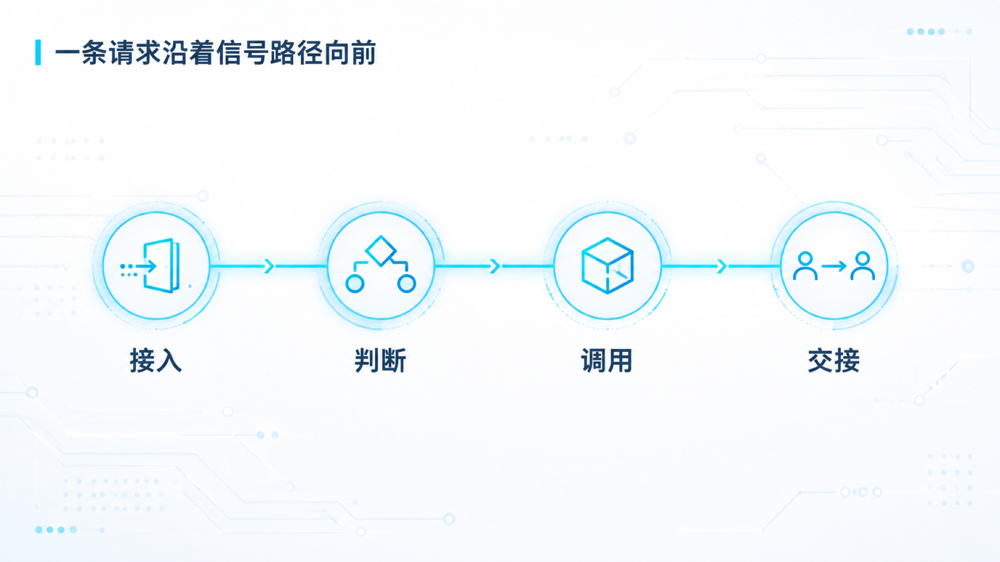
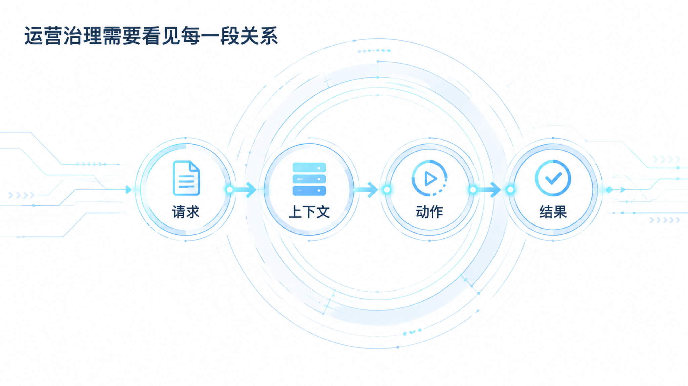
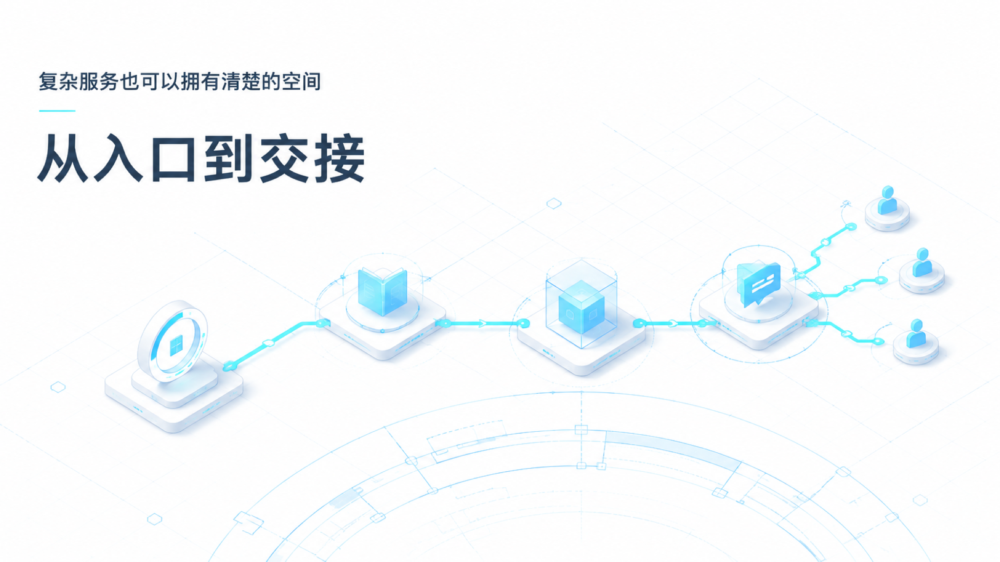

AI 客服：系统蓝图视觉方案覆盖
主题：
systems/white-cyan-circuit
· 五种关系表达 · 视觉 QA 均通过
95 分以上

s01 · circuit-flow · 96/100

s02 · data-overview · 96/100
s03 · signal-quote · 96/100
s04 · ui-concept · 95/100

s05 · isometric-space · 96/100